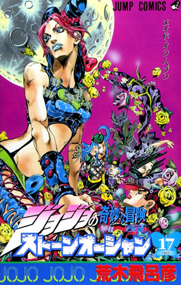

Opening
eaven's Falling Down
Portada
Manga
anime

Historia del manga
JoJo’s Bizarre Adventure Parte 6, titulada Stone Ocean, se publicó como manga entre 2000 y 2003. La historia sigue a Jolyne Cujoh, la hija de Jotaro Kujo, quien es injustamente encarcelada en la prisión de máxima seguridad de Green Dolphin Street en Florida. Allí descubre que posee un Stand llamado Stone Free, que le permite descomponer su cuerpo en hilos y manipularlos con gran precisión. Mientras intenta limpiar su nombre y escapar, Jolyne se enfrenta a peligrosos enemigos enviados por el sacerdote Enrico Pucci, discípulo de DIO, quien busca cumplir el plan del “Cielo” y alterar el destino de la humanidad usando los poderes del Stand.
El anime de Stone Ocean se estrenó en 2021 y se lanzó por partes a través de Netflix, adaptando la historia completa del manga. La serie combina acción, estrategia de Stands y elementos de suspenso dentro de la prisión, explorando temas de destino, sacrificio y legado familiar.
Un dato curioso de esta parte es que Jolyne es la primera protagonista femenina de la saga principal de JoJo, lo que marca un cambio significativo en la narrativa. Además, Stone Ocean expande las reglas de los Stands y juega con conceptos como la manipulación del tiempo y la realidad, incluyendo transformaciones de Stands como Made in Heaven, que acelera el tiempo a escala global, mostrando la creatividad extrema de Araki hacia el final de su serie original de aventuras JoJo.